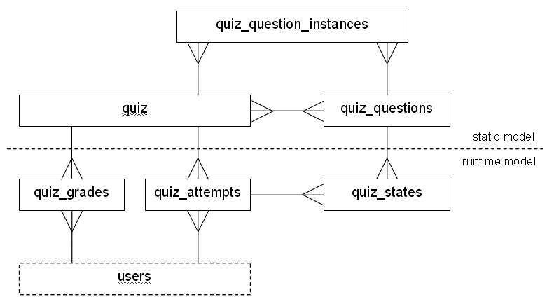

The quiz data model has a fairly large pool of database tables, so the first step in explaining them is to provide some order. Conceptually it is possible to distinguish between a static model, which allows defining quizzes and questions, and a runtime model, which stores all the data that is generated when users interact with the statically defined quizzes and questions. Modifying the data in the tables from the static model is only possible for users with teacher privileges (this constraint is not imposed by the database, it is merely an observation). The data in the tables of the runtime model is created when student users interact with quizzes. Therefore these tables usually contain significantly more data than the ones from the static model.
A further simplification is possible by ignoring the questiontype specific tables. They are logical extensions to other tables and therefore are not necessary for understanding the general basic model. However, some information is provided for each questiontype specific table, namely which questiontype it belongs to (although that should be clear from the name), which table it extends and what the additional data is needed for.
Using these two criteria the list below puts some order into the collection of tables.
These simplifications reduce the number of "interesting" tables to a significantly smaller number, and still some of them are only necessary for understanding very specific aspects of the quiz module. The diagram below shows how the most important tables are linked to one another.

The quiz table contains the definition for all the quizzes. Each quiz belongs to a course, reflected by the course id, has a name and a short descriptive text (intro), an opening and a closing time and several fields that store the settings of various quiz options, each of which is explained in the quiz help that is linked to from the quiz settings page. One field that may require additional information is the optionsflag, which... (maybe Gustav can add an explanation here?).
The quiz id is used extensively to identify records from various runtime tables, reflecting the fact (surprise) that quizzes are the main players in the quiz module.
This table constitutes the item or question bank, i.e. the
repository of defined questions. The quiz_questions
table defines the data that is common to questions of all types. It provides
each question with a unique id which is used as a foreign key in many other
tables. for example the quiz_answers table allows to define
an arbitrary number of answers that are part of the question. And
many questiontypes have their own tables that hold more information about the
question.
Most fields are self explanatory, however, there are a few that require additional explanation: the parent field is a means to provide support for wrapped questions (e.g. the multianswer questiontype). When a question wraps around any number of subquestions the subquestions will have their parent id field set to the id of the main question, thus allowing the question to find all its sub-questions (or wrapped questions). A side effect is that any question with a parent id other than "0" is not shown in the list of questions that can be added to a quiz. This side effect is also used for effectively hiding random questions from the question list. Their parent field is simply set to their own id.
It may seem strange then to also have a field called hidden,
but that serves a slightly different purpose. Hiding questions is first of all a
mechanism to "delete" questions without removing them from the
database and thus to restore or "unhide" them at a later stage. Also
the (unfinished and disabled) versioning feature uses the hidden field to
prevent older versions of a question from cluttering the user interface.
A question can also have a length. This defines how many question numbers are required for this question. It is generally set to "1", but the description questiontype, for example, sets it to "0", reflecting the fact that it doesn't have a question number.
We now deal with the remaining tables from the static model in alphabetical order.This table allows a common way to define one or more answers for each question. It is not mandatory for a questiontype to make use of this table however. A questiontype may choose to store it's answers in an entirely different way, or even to calculate the correct answer on the fly.
The question id links each answer to a question. The sequence number field may be used to store the order of the different answers, it can be set to "0" though if the order is of no importance. The answer field stores whatever constitutes an answer for the concerned questiontype (each questiontype can make whatever it wants off it's answers), the fraction field stores the assigned score for the question (range 0..1) and the feedback field allows defining some feedback, to be displayed when the student's answer agrees with the defined answer record.
Categories are provided as a way to organize questions. Each category has a name and a descriptive text (info) and the sortorder as metadata. Categories allow hierarchical nesting via the parent id and can be private or published, i.e. they can be made available to teachers in other courses.
Since categories are simply a means for organising questions they are not vital for understanding how the quiz module works.
Questions can have different grades assigned in different quizzes. These are
stored in the quiz_question_instances table. While, after a small
extension, this table could also fulfill the purpose of storing the order of the
questions in a quiz, this is currently still done in the questions
field in the quiz table.
This feature is not finished and disabled. The table structure may still change.
In the quiz_attempts table a record is created each time when a user starts an
attempt at a quiz. It is possible for a user to attempt a quiz several times,
therefore the number of the attempt is stored in the attempt field.
The sumgrade field records the (unscaled) grade for the attempt,
i.e. if the grades assigned to the questions add up to 8, but the maximum grade
for the quiz is set to 10, then the sumgrades field can contain 8
at maximum.
The timestart field is set to the current time when an attempt is
started and is never changed afterwards. The timefinish field is
set to "0" initially and to the current time when the attempt is closed. This
is exploited at several places in the code to determine whether an attempt
has been closed or not (i.e. closed = timefinish > 0). For all other
modifications of an attempt record the timemodified field should be
changed as well.
Finally, there are the layout and preview
fields. The preview field is a flag that marks a teacher preview
(i.e. an attempt by a user with teacher privileges) that may be
automatically deleted when the quiz is previewed again, and which is
not taken into account when viewing statistics. The
layout field contains
a comma separated list of question ids, with a "0" denoting a page
break. Usually the comma separated list ends with ",0".
States are saved for each interaction with a question. This allows
to review the complete history of a user's attempts on individual
questions. The seq_number field stores the order of
this history, the answer field stores a questiontype
specific string unless the questiontype stores its answers
differently. The event field stores an integer which can be one of
the named constant defined in the file
locallib.php denoting for example a saving or a
grading interaction amongst others. For more details see
eventtypes.html
Of further interest are the grade, raw_grade and
penalty fields. The raw_grade field stores the grade
that was achieved for the question scaled to the question's weight or grade as
assigned in the quiz_question_instances table. The grade
field stores the actual achieved grade after deduction of the penalty.
And in the penalty field the penalty for that state is saved. This
is different from the cumulative penalty, which is stored in the
quiz_newest_states table.
The originalquestion field is a construct that will be used by the
versioning code. The question ids in the states will be changed to the ids of
the new versions of the questions and the id of the question, which was used
for the actual attempt, will be stored in the originalquestion
field.
The quiz_grades table merely stores a student's awarded grade for a quiz. Since
it is possible to allow several attempts on a quiz, the grade stored is
calculated depending on the quiz setting grademethod. This table
exists mainly for convenience, because the values of its fields can be
recalculated.
This table exists only for efficiency reasons:
This table was introduced in Moodle 1.5 and is not populated for all states during the upgrade because on sites with a lot of existing states that could take too long. Rather it is done whenever needed by quiz_upgrade_states().
The quiz_calculated table is an extension to the
quiz_questions table by the calculated questiontype.
However, it would be more suitable to change that to be an extension
of the quiz_answers table, which, from a data
perspective, is already possible, since an answer id is stored in
the answer field. The questiontype code would need some
changes to take this into account, however.
The quiz_dataset_definitions table belongs to the abstract
datasetdependent questiontype, which is currently only used by the calculated
questiontype. It is an indirect extension to the quiz_questions
table, because the quiz_question_datasets table can link a question
to one or more datasets. Each dataset represents a variable, that is used either
in the questiontext or in the answer to a dataset dependent question.
Dataset items can be created for each dataset. The quiz_dataset_items
table stores these possible values for the variables defined in the
quiz_dataset_definitions table.
The quiz_match table belongs to the match questiontype and extends
the quiz_questions table. It is only used in the code for saving
matching questions and can therefore be considered redundant.
The quiz_match_sub table belongs to the match questiontype and
extends the quiz_questions table. It stores the pairs of questions
and answers (as strings) that need to be matched for a correct solution.
The quiz_multianswers table belongs to the multianswer questiontype
and is an extension of the quiz_questions table. It merely stores a
comma separated list of question ids in the sequence field, which
is important, because that's the only way to know which sub question belongs to
which position in the questiontext.
The quiz_multichoice table belongs to the multichoice
questiontype and is an extension of the quiz_questions
table. The layout field does not seem to be used, the
answers field stores the order of the answers (should
be superseded by the seq_number field in the
quiz_answers table) and the single field
is a flag signaling, whether only one option or multiple options can
be chosen.
The quiz_numerical table belongs to the numerical questiontype
and is an extension of the quiz_answers table, defining a tolerance
value for each answer.
The quiz_numerical_units table is used by the numerical
questiontype and the calculated questionype. It extends the
quiz_questions table, defining an arbitrary number of units that
can be used in the responses.
The quiz_question_datasets table is used by dataset
dependent questionypes (i.e. calculated) to link datasets to
questions.
This extension to the quiz_questions table simply stores how many
shortanswer questions should be randomly chosen to build this randomsamatch
question.
No information.
No information.
No information.
The quiz_shortanswer table belongs to the shortanswer questiontype
and is an extension of the quiz_questions table. The answers field
stores a comma separated list of answer ids, which is redundant. The only
valuable piece of information contained in this table is the usecase
field, which is used to decide whether to do a case sensitive or case
insensitive comparison for grading.
An extension of the quiz_questions table the quiz_truefalse
table stores the answer ids for the true and for the false answers.